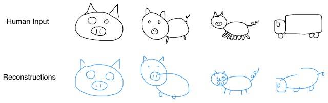

Pesquisadores da Google ensinam rede neural a desenhar
|17/04/2017|
Usando o programa do Google “Quick, Draw!”, os desenvolvedores ensinaram a rede neural a desenhar em formato vetorial através de categorias com mais de 70 mil desenhos.
O sistema aprendeu a desenhar e a unir partes de dados armazenados; David Ha, um dos responsáveis, afirmou: Treinamos nosso modelo em um conjunto de dados de esboços desenhados à mão, cada um representado como uma sequência de ações motoras que controlam uma caneta: qual direção mover, quando levantar a caneta para cima e quando parar de desenhar.
Além disso, o programa é capaz de reconhecer erros. A figura a seguir mostra os desenhos feitos à mão e, logo abaixo, a reconstrução feita pela rede neural; percebe-se que os erros do desenho foram corrigidos pela máquina, já que ela pode identificar que um porco não tem oito pernas e tampouco parece um caminhão.

Comparação entre o desenho manual e a reconstrução virtual
Fonte:
https://olhardigital.uol.com.br/noticia/google-ensina-rede-neural-a-desenhar/67513 (Acesso em 17/04/2017)
Cientistas descobrem como fazer “upload de conhecimento” para o cérebro
|Pesquisa em desenvolvimento|
Enviar conhecimento diretamente para o seu cérebro, exatamente como no filme de ficção científica Matrix, poderá em breve demandar um esforço semelhante ao de dormir, cientistas acreditam.
Pesquisadores alegam ter desenvolvido um simulador que pode enviar informações diretamente para o cérebro de uma pessoa e a ensiná-la novas habilidades em um curto período, comparando-o com a “imitação da arte pela vida”.
Eles acreditam que esse simulador pode ser o primeiro passo no desenvolvimento de uma software avançado que irá fazer do aprendizado instantâneo, ao estilo de Matrix, uma realidade.
No clássico da ficção científica, o protagonista Neo é capaz de aprender Kung Fu em segundos depois que essa arte marcial é carregada para o seu cérebro.
Pesquisadores da HRL Laboratories, com sede na Califórnia, dizem ter encontrado uma maneira de ampliar o aprendizado, só que em escala muito menor do que visto no filme de Hollywood.
Eles estudaram os sinais elétricos de um cérebro treinado de um piloto e então introduziram os dados de modo idêntico em indivíduos novatos, que aprenderam a pilotar um avião em um simulador de voo realista.
O estudo, publicado no periódico Frontiers in Human Neuroscience, descobriu que os indivíduos que receberam a estimulação cerebral via eletrodos implantados na cabeça melhoraram suas habilidades de piloto e aprenderam as tarefas 33% melhor que o grupo placebo.
Fonte:
http://www.universoracionalista.org
Instagram supera Snapchat com função Stories
|17/04/2017|
De fato, o sucesso das tecnologias mobile depende de aplicativos e redes sociais como as famosas Instagram e Snapchat. Este possibilitava o envio de fotos que só poderiam ser vistas uma vez e, posteriormente, adicionou o serviço de Stories; já aquele, permitia que o usuário publicasse uma foto que seria vista por todos os seus seguidores e ficaria salva no seu perfil, podendo ser vista ilimitadamente.
A função Stories, inicialmente criada pelo Snapchat, baseava-se na ideia de publicar uma foto que poderia ser vista por todos os contatos na rede social por um período de 24 horas, sem limite de visualizações. Em meio à concorrência, outras redes aderiram à moda, inclusive o Instagram.
Graças à nova função, o Instagram superou o concorrente, chegando a 200 milhões de usuários diariamente, 50 milhões a mais que o Snapchat, considerando aqueles que fazem uso da Stories.
Instagram faz sucesso com a nova função Stories.
Fonte:
https://www.tecmundo.com.br/instagram/115844-novo-lider-pedaco-instagram-tem-usuarios-snapchat.htm?utm_source=tecmundo.com.br&utm_medium=home&utm_campaign=ultimasnoticias (Acesso em 17/04/2017)
Conhecimento sobre programação é diferencial no mercado de trabalho
|17/04/2017|
No mercado atual, quanto mais habilidades, melhor. Além de conhecer outros idiomas e fazer cursos sobre empreendedorismo, saber programar é uma habilidade muito bem-vinda e abre portas para boas oportunidades de trabalho.
Vivemos em um mundo em que a tecnologia toma conta de diversos aspectos da vida; nessa realidade em que estamos, entender como funciona a programação é muito importante para o sucesso profissional.
Nos Estados Unidos da América, por exemplo, há incentivos para que crianças, desde pequenas, tenham contato com a lógica e a programação, porque, de fato, a procura por conhecedores da área só aumenta.
Especialistas da área de Ciência da Computação defendem que a programação deve ser aprendida não para ser programador, mas para desenvolver lógica, resolução de problemas, criatividade, matemática e até mesmo inglês.
Portanto, espera-se que o profissional já chegue no mercado sabendo usar um computador e programar; desenvolver tal habilidade é a chave para o sucesso na profissão.
Fonte:
http://gshow.globo.com/TV-Tem/Revista-de-Sabado/noticia/2017/03/programacao-pra-computadores-e-area-de-estudo-do-momento.html (Acesso em 17/04/2017)
Motorola volta atrás com fones de ouvido
|17/04/2017|
A tendência no mercado de tecnologias mobile é desaparecer com as entradas P2 para fones de ouvido. Alguns usuários preferem a praticidade do fone sem fio, porém muitos outros pedem a volta da entrada para fones.
Em sua nova linha de produtos Moto Z, a Motorola havia retirado de seus aparelhos o jack para fones, mas houve polêmica, já que muitos usuários preferem a entrada P2 no aparelho; após críticas, no novo Moto Z2 Force, ela voltou atrás e está trazendo de volta os fones com fio.
Fonte:
https://www.mobilebit.com.br/moto-z2-force-entrada-fones-de-ouvido/ (Acesso em 17/04/2017)
Comunicação entre cérebros
|Pesquisa em desenvolvimento|
Uma equipe de cientistas de Harvard está desenvolvendo uma forma extremamente avançada de comunicação entre humanos e até entre humanos e animais. Já há maneiras de ligar dois cérebros e estabelecer comunicação neural capaz de controlar o corpo de outra pessoa ou realizar uma espécie de conversa por ‘telepatia’.
Os cientistas da renomada universidade norte-americana já conseguiram realizar experimentos com essa tecnologia em animais, e os resultados são promissores.
Fontes:
https://www.tecmundo.com.br/
Happy Code
Somos uma escola de tecnologia e inovação voltada para crianças e adolescentes de 5 a 17 anos.
Nossa metodologia de ensino é baseada no conceito global STEAM – Science, Technology, Engineering, Arts and Math, que une o conteúdo de disciplinas fundamentais, formando alunos mais preparados e capacitados para os desafios do dia a dia.
A escola de competências digitais especializada em crianças e adolescentes entre 6 e 17 anos, Happy Code, está oferecendo aulas de programação (iniciadas em 3 de abril) em uma plataforma para que os alunos aprendam a manipular o jogo Minecraft na linguagem JAVA.
O projeto permite que os jovens tenham contato desde cedo com a ciência da computação de maneira divertida e lúdica. Além disso, permite o desenvolvimento de conhecimentos sobre a linguagem, sua sintaxe e sua lógica; tais fatores são considerados diferenciais no mercado de trabalho atual.
Fonte:
https://www.tecmundo.com.br/cursos/115345-curso-online-programacao-java-minecraft-modding-oferecido-gratis.htm (Acesso em 17/04/2017)
O novo Galaxy S8
|12/04/2017|
A Samsung lançará neste mês de abril seu mais novo smartphone, o Galaxy S8. Tal aparelho possui capacidade de processamento suficiente para executar jogos do GameCube (console da Nintendo, lançado em 2001) e é mais resistente que o aparelho da concorrente Apple, o iPhone 7. Desde que as pré-vendas foram abertas na Coreia do Sul, o Galaxy S8 já vendeu 5,5 vezes mais que seu antecessor, o Galaxy S7.
Foto tirada com o Galaxy S8, por Matthew Cattel.
Além disso, o novo smartphone destaca-se pela qualidade das imagens; a câmera principal é de 12 megapixels com tecnologia Dual Pixel, enquanto a frontal apresenta 8 megapixels com autofoco. Ao lado, vemos uma foto tirada com o Galaxy S8 pelo fotógrafo profissional Matthew Cattell.
Dentre as demais qualidades do aparelho, encontram-se: tela de 5,8 polegadas (6,2 no Galaxy S8+), 4 GB de RAM, 64 GB de memória, resistência à água e à poeira, leitor de íris, de reconhecimento fácil e de impressões digitais e sistema operacional Android 7.0 Nougat.
Fontes:
http://www.tudocelular.com/android/noticias/n91356/samsung-galaxy-s8-camera-exemplos-oficiais.html (Acesso em 12/04/2017)
http://exame.abril.com.br/tecnologia/galaxy-s8-e-tao-poderoso-quanto-videogame-da-nintendo/ (Acesso em 12/04/2017)
https://www.tecmundo.com.br/samsung-galaxy-s8/115733-vendas-galaxy-s8-5x-maiores-galaxy-s7.htm (Acesso em 12/04/2017)
Tinta de célula solar
|Pesquisa em desenvolvimento|
Pesquisadores da Universidade de Notre Dame, nos Estados Unidos, desenvolveram uma tinta que, ao aplicada em uma superfície condutora de eletricidade, consegue captar a energia solar a transformá-la em energia elétrica para alimentar qualquer circuito eletrônico.
A tinta solar foi criada a partir de nanopartículas de dióxido de titânio misturadas com sulfureto de cádimo e mergulhadas em uma solução de água e álcool. Ao fim do processo, que não requer nenhum material especial, obteve-se uma espécie de pasta que pode ser aplicada como uma tinta. Em resumo, você poderá no futuro abastecer sua casa de energia solar pintando o teto metálico da sua casa.
Fontes:
https://www.tecmundo.com.br/
Samsung é condenada a indenizar a Huawei em 36,4 milhões
|07/04/2017|
A Samsung foi condenada a pagar 80 milhões de yuan (o equivalente a R$ 36,4 milhões) à Huawei por violação de patente na China.
O processo envolve interfaces de usuário referentes a coisas como design de widgets e disposição de ícones, e faz parte de uma guerra entre as duas companhias.
A encrenca começou em maio passado, quando a Huawei processou a Samsung nos Estados Unidos e na China por uso não autorizado de patentes sobre o uso de padrões 4G. A coreana contra-atacou processando a marca chinesa sob o argumento de que o celular Mate 8 viola as suas patentes.
Apesar de ter perdido uma batalha, a Samsung não parece disposta a aceitar o resultado, já que informou, em nota enviada à ZDNet, que pretende recorrer da decisão.
Fonte:
https://www.tecmundo.com.br/
Nanofibra
|Pesquisa em desenvolvimento|
A nanofibra é um material fibroso extremamente fino (menos que 100 nanômetros) que funciona de maneira muito eficaz para criar filtros para materiais pequenos. Um exemplo disso é o sal, uma vez que os grãos são muito grandes para passar através dos furos de uma tela feita de nanofibras.
No futuro, as nanofibras poderão ser usadas em filtros para transformar a água dos oceanos em potável: a solução para nossos problemas com a escassez de água. A tecnologia já existe, mas o custo de produção ainda é alto demais.
Fontes:
https://www.tecmundo.com.br/
'Uncharted 4' vence prêmio de melhor jogo no BAFTA Games Awards 2017
|06/04/2017|
O game de ação "Uncharted 4: A Thief's End" venceu nesta quinta-feira (6) o prêmio de melhor jogo no BAFTA Games Awards 2017, premiação organizada pela Academia Britânica de TV e Artes Cinematográficas.
O grande vencedor em números foi o bizarro e obscuro "Inside", jogo de plataforma dos criadores de "Limbo". "Inside" foi indicado em sete categorias e ganhou em quatro: realização artística, melhor game design, melhor narrativa e melhor propriedade original.
Outros destaques são "Overcooked", game multiplayer que simula o funcionamento de uma cozinha e levou dois prêmios, de melhor jogo britânico e melhor jogo família; e "Pokémon Go", que venceu como melhor jogo para dispositivos móveis.
Fonte:
https://www.tecmundo.com.br/
Twitter cria versão 'Lite' para usuários com conexão de internet limitada
"Fast to install; Quick and light; Automatic updates; Control your data; One-tap access from your home screen; Push Notifications; Offline access; Safe browsing."
O Twitter lançou nesta quarta-feira (5) uma versão mais rápida do seu serviço voltada a pessoas com conexões ruins de internet ou com pacotes de dados limitados, na esperança de captar usuários em mercados emergentes.
Chamada de Twitter Lite, a nova versão será destinada em grande parte a usuários de fora dos Estados Unidos. O Twitter Lite funciona através de um navegador web, não um aplicativo de telefone autônomo, mas sua aparência e funcionalidade são quase idênticas ao que os usuários do aplicativo experimentam, de acordo com uma visualização mostrada à Reuters.
O lançamento vem na esteira de produtos similares de outras empresas de tecnologia dos EUA. O Facebook lançou o Facebook Lite em 2015 e na terça-feira, o Youtube, da Alphabet, lançou um aplicativo móvel projetado para a Índia.
O Twitter, com sede em San Francisco, está atrás dessas empresas na construção de uma base de usuários. Ele tinha 319 milhões de usuários ativos médios mensais no final do ano passado, um aumento de 4% ano-a-ano, mas ainda uma fração dos 1,9 bilhão de usuários do Facebook.
Fonte:
https://www.tecmundo.com.br/
Startup chinesa pode revolucionar o mundo com celular de tela dobrável
|Pesquisa em desenvolvimento|
É curioso notar como diferentes produtos criados com novas tecnologias podem ter impactos completamente diferentes – e às vezes até imprevisíveis – nos consumidores. Na teoria, um smartphone que tem uma tela completamente dobrável e pode ser usado no pulso, como um relógio, deveria cair nas graças dos fanáticos por aparelhos tecnológicos. Mas será que realmente vai?
É o desafio que uma pequena startup chinesa tem pela frente. Conhecida como Moxi Group, a empresa revelou para a imprensa imagens de um protótipo bastante interessante: trata-se de um smartphone que pode ser usado tanto em sua forma reta, como qualquer outro dispositivo desse tipo, quanto dobrado, em forma circular, assim como um relógio de pulso. Mesmo dessa maneira, a tela continuaria funcionando normalmente.
Telas flexíveis e dobráveis não são nenhuma novidade por aí, se você tem acompanhado as últimas feiras conceituadas no assunto. Porém, ainda não foi lançado nenhum celular que fosse completamente dobrável e, mais importante, prático de se usar. O Moxi Group pretende ser a primeira empresa a comercializar esse tipo de dispositivo na China ainda em 2016, com uma tiragem de 100 mil aparelhos, cada um deles custando ¥ 5 mil, aproximadamente R$ 2.730.
Apesar das belas imagens divulgadas pela startup chinesa, o display desse primeiro modelo será em preto em branco, mas o Moxi Group já informou que tem a pretensão de lançar um dispositivo com tela colorida até o ano de 2018. Toda a tecnologia por trás dos visores flexíveis se baseia em um material extremamente versátil e, para quem não entende muito bem suas propriedades científicas, quase mágico: o grafeno.
O grafeno é considerado o material mais fino, mais leve, mais forte, mais transparente e que melhor conduz calor e eletricidade conhecido pela ciência. É claro, isso deve fazer dele um dos mais caros também e por isso sua utilização comercial ainda é tão restrita. Ainda assim, um protótipo desse dispositivo foi mostrado para o público durante o Nanping International Conventional Center, que acontece em Chongqing, na China, mas não havia sido possível descobrir o responsável pelo incrível gadget.
Agora sabemos que tudo era obra do Moxi Group, que revelou essa semana estarem quase prontos para comercializar o produto, mesmo que em uma versão menos avançada do que o que foi mostrado para os consumidores na feira chinesa.
Se essa nova tecnologia adotada dessa maneira vai colar ou não, só o futuro poderá dizer. Ainda assim, é um passo brilhante que deve ser levado em conta e que pode ser uma visão de como vamos utilizar nossos smartphones em algo em torno de 10 anos, basta a praticidade desse dispositivo meio celular, meio smartwatch cair no gosto dos consumidores.
Fontes:
http://www.universoracionalista.org
Project Scorpio é quatro vezes mais rápido que Xbox One, diz site
Lançamento está previsto para o final de 2017
|06/04/2017|
O Project Scorpio, codinome da versão mais poderosa do videogame Xbox One, revelada na feira E3 2016, será quatro vezes mais rápido que o modelo original. As informações e análises foram divulgadas nesta quinta-feira (6) pelo site especializado Digital Foundry, que teve acesso direto às especificações técnicas do console.
O aparelho chega para bater de frente com o PlayStation 4 Pro, da Sony, considerado o primeiro console de meia geração. Ou seja: mesma plataforma, mesmo sistema e jogos, mas em uma máquina turbinada.
O lançamento do Scorpio está previsto para o final do ano, de acordo com a Microsoft, que promete mostrar o aparelho pela primeira vez durante a E3 2017.
Fonte:
https://www.tecmundo.com.br/
Google é a marca mais influente entre os brasileiros, diz pesquisa
|06/04/2017|
Uma pesquisa realizada pela empresa de marketing Ipsos mostra que o Google é a marca mais influente entre os brasileiros. A segunda posição do ranking também é ocupada por uma empresa da Alphabet: o YouTube, seguido pelo Facebook, pela Microsoft e pela Samsung. A pesquisa, realizada em quase 20 países, avalia as marcas e seu poder de influência no cotidiano e no comportamento dos consumidores.
No Brasil, é feita pela web com mais de duas mil pessoas e analisa como o público classifica uma marca dentro de quase 60 atributos, que medem, por exemplo, se a empresa faz parte do cotidiano dos entrevistado, se entede suas necessidades, se inspira confiança, entre outros detalhes. O objetivo é entender como cinco dimensões: liderança/inovação, confiança, presença, responsabilidade social e engajamento estão correlacionadas com a influência.
"A pesquisa aponta que as gigantes da tecnologia lideram o ranking por se destacarem principalmente no driver de Liderança e Inovação, já que para Google e YouTube, que são os primeiros colocados, o peso da dimensão Liderança e Inovação representou 44% da influência. Isto demonstra que, na atual conjuntura, os participantes elegeram marcas de referência que estabelecem um vínculo de confiança e que transformam a vida dos brasileiros através da tecnologia e de novos formatos de entretenimento. É interessante ver o quanto a dimensão Responsabilidade Social é valorizada no cenário de crise moral e política pela qual passa o Brasil”, explica Leda Kayano, Managing Director da Ipsos Marketing.
"Na América do Norte, o Windows (todas as versões) manteve a liderança em todas as plataformas, com 39,5%, seguido pelo iOS (25,7%) e pelo Android (21,2%). O mesmo acontece na Europa, onde o Windows (51,7%) tem mais do que o dobro do Android (23,6%). No entanto, na Ásia, o Android tem 52,2%, bem mais do que os 29,2% do Windows", explica a empresa que realizou a pesquisa.
Excluindo-se o tráfego de dispositivos móveis, no entanto, o sistema da Microsoft mantém a liderança, correspondendo a 84% dos dispositivos.
Fonte:
https://www.tecmundo.com.br/
Mulheres ampliam vantagem como o maior público de games no Brasil, diz pesquisa
|04/04/2017|
As mulheres ampliaram vantagem sobre os homens como o maior público de games no Brasil, segundo a pesquisa Game Brasil 2017, divulgada nesta terça-feira (4). A fatia da ala feminina aumentou 1 ponto percentual em relação ao ano passado e passou a representar 53,6% dos jogadores do país.
Esta é a quarta edição do levantamento, que busca traçar o perfil dos brasileiros que jogam videogame. O estudo é feito pela agência de tecnologia interativa Sioux, a empresa de pesquisa especializada em consumo Blend New Research e a Game Lab, divisão da ESPM dedicada à experimentação e pesquisa de jogos.
A Game Brasil 2017 ouviu 2.947 pessoas de 26 estados e do Distrito Federal entre os dias 1 e 16 de fevereiro de 2016.
A forte presença das mulheres no mundo dos jogos foi captada desde a primeira edição da pesquisa. Agora, os editores do documento, afirmam que a presença delas se consolidou já que representam a maioria dos jogadores pelo segundo ano consecutivo. Apesar disso, os games não são a primeira opção de entretenimento das mulheres. Cinema, sair com amigos e redes sociais vêm antes.
Quase seis em cada dez (59%) se dizem jogadoras casuais. A plataforma preferida é o smartphone para 53,3%, graças a sua mobilidade. O tempo médio gasto com games por elas é de uma a duas horas por semana. Quando o assunto é console, o Xbox 360 é o mais citado por 37%.
Os smartphones continuam a ser a plataforma mais popular. É onde jogam 77,9% dos entrevistados. Os aparelhos móveis são seguidos por computadores (66,4%) e consoles (49%). Os índices são sobrepostos porque os jogadores brasileiros não são cativos de apenas um dispositivo –74% dos entrevistas optam por mais de um deles.
Já quando o tópico é o aparelho preferido para jogar, o smartphone é apontado por 37,6% dos gamers, enquanto consoles são citados por 28,8% e computadores, por 26,4%. Três em cada quatro entrevistados afirmam ter o costume de baixar aplicativos de jogos.
O segundo videogame da Microsoft já tem mais de 10 anos de vida, mas continua sendo o console mais popular entre os brasileiros. De acordo com a Game Brasil 2017, 44,2% dos entrevistados usam um Xbox 360, seguido do PlayStation 3 (29,2%) e PS2 (26,5%).
No quesito preferência, o PlayStation 4 assumiu a ponta, com 30,7% das citações, seguido pelo Xbox 360, com 28,6%.
Fonte:
g1.globo.com/tecnologia/
DNA como meio de armazenamento
|Pesquisa em desenvolvimento|
A forma mais rápida dos meios de armazenamento populares hoje é o SSD, o disco de estado sólido que equipa os chamados ultrabooks. Porém, estudos com novas tecnologias de armazenamento de informação já indicam que podemos guardar bits – informação digital – no DNA.
Cientistas conseguiram gravar em moléculas de DNA um arquivo de áudio de um discurso de Martin Luther King Jr., uma foto, uma cópia do artigo científico de Watson e Crick sobre DNA e 154 sonetos de Shakespeare. Depois, eles foram capazes de recuperar todos os dados com 99,99% de precisão, tão eficiente quanto os HDs ou SSDs de hoje.
Quando a tecnologia estiver popularizada, poderemos gravar terabytes de informação em unidades microscópicas de armazenamento, fazendo computadores e outros dispositivos com memória muito menores e mais leves também.
Fonte:
https://www.tecmundo.com.br/
Windows perde o posto de sistema operacional mais usado do mundo
|03/04/2017|
O Windows acaba de perder o posto de sistema operacional mais popular. Uma pesquisa divulgada pela StatCounter mostra que o Android, sistema operacional do Google, ultrapassou no último mês de março o sistema da Microsoft em acessos à internet, com 37,93% de utilização, enquanto o Windows ficou com 37,91%.
Os dados foram coletados de uma amostra que analisou a origem do tráfego de mais de três milhões de sites e páginas com mais de 15 bilhões de visualizações por mês.
Essa é a primeira vez, desde os anos 80, que o Windows perde seu posto, de acordo com Aodhan Cullen, CEO da StatCounter. O valor mostra o crescimento do Android, principamente, em mercado asiático.
"Na América do Norte, o Windows (todas as versões) manteve a liderança em todas as plataformas, com 39,5%, seguido pelo iOS (25,7%) e pelo Android (21,2%). O mesmo acontece na Europa, onde o Windows (51,7%) tem mais do que o dobro do Android (23,6%). No entanto, na Ásia, o Android tem 52,2%, bem mais do que os 29,2% do Windows", explica a empresa que realizou a pesquisa.
Excluindo-se o tráfego de dispositivos móveis, no entanto, o sistema da Microsoft mantém a liderança, correspondendo a 84% dos dispositivos.